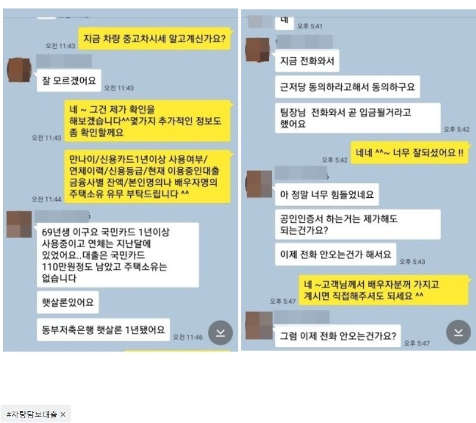

소득활동이 없는 무직자, 차량담보대출 2700만원 승인사례!!!
안녕하세요~ 오늘은 제가 상담 진행해드린 안**고객님의 대출 사례를
안내해 드리겠습니다. 안**고객님께서는 소득활동이 없는 무직자 였고 기대출은
동부저축880만원, 카드론 110만원, 현금서비스 300만원을 사용중이였습니다.
최근 카드결제 대금 단기연체이력으로 추가대출이 매우 어려운 상황이였습니다. 게다가
현재 카드대금 2일 연체중이라 연체 등록전에 대출이 꼭 필요하신 상황이셨습니다.
저는 상담 후 고객님 본인명의 차량을 소유중인걸 확인하고, 차량담보 쪽으로는
충분히 가능성이 있다고 판단되어 진행을 도와드렸습니다. 그 결과 한 금융사에서
차량담보 조건으로 2700만원의 한도가 나와 연체중이였던 카드대금과 필요하셨던 추가자금
을 마련하여 매우 만족해 하셨습니다. 아래는 저와 안**고객님의 카톡상담 내용 일부를
캡쳐한것이오니, 참고하시어 많은 도움 되셨으면 좋겠습니다. 감사합니다.^^
